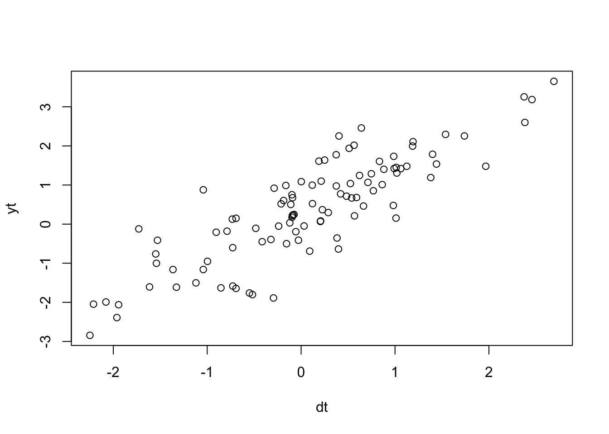

6.5 Linear regression with AR(1) errors
A simple linear regression of one covariate with AR(1) errors is written:
\[\begin{equation} \begin{gathered} x_{t} = b x_{t-1} + w_{t}, \text{ } w_t \sim \,\text{N}(0,q) \\ y_{t} = \beta d_t + x_{t} \end{gathered} \tag{6.7} \end{equation}\]
Let’s create some simulated data with this structure:
beta <- 1.1
dt <- rnorm(TT, 0, 1) #our covariate
wt <- arima.sim(n = TT, model = list(ar = b), sd = sqrt(q))
yt <- beta * dt + wt
yt <- as.vector(yt) # not ts object
plot(dt, yt)
If we looked at an ACF of the residuals of a linear regression, we’d see that the residuals are highly autocorrelated:
acf(residuals(lm(yt ~ dt)))
We can fit this model (Equation (6.7)) with MARSS(). Please note that there are many better R packages specifically designed for linear regression models with correlated errors. This simple example is to help you understand model specification with the MARSS package.
To fit this model, we need match our Equation (6.7) with the full MARSS model written in matrix form (Equation (5.2)). Here it is with the parameters that are zero dropped. \(\mathbf{Z}_t\) is identity and is also dropped. The \(\mathbf{B}\) and \(\mathbf{D}\) are time-constant so the \(t\) subscript is dropped. The \(\mathbf{x}_t\) are the AR(1) errors and the \(\mathbf{y}_t\) is the linear regression with \(\mathbf{D}\) being the effect sizes and the \(\mathbf{d}\) being the covariate.
\(1 \times 1\). \[\begin{equation} \begin{gathered} \begin{bmatrix}x\end{bmatrix}_{t} = \begin{bmatrix}b\end{bmatrix}\begin{bmatrix}x\end{bmatrix}_{t-1} + \begin{bmatrix}0\end{bmatrix} + \begin{bmatrix}w\end{bmatrix}_{t} \\ \begin{bmatrix}y\end{bmatrix}_{t} = \begin{bmatrix}x\end{bmatrix}_{t} + \begin{bmatrix}\beta\end{bmatrix}\begin{bmatrix}d\end{bmatrix}_t \end{gathered} \tag{6.9} \end{equation}\]
To create the model list for MARSS(), we specify the parameter matrices one-to-one like they look in Equation @ref(eq:short.lr.ar1.mat).
R <- matrix("r") # no v_t
D <- matrix("beta")
U <- matrix(0) # since arima.sim was used, no u
B <- matrix("b")
d <- matrix(dt, nrow = 1)
A <- matrix(0)MARSS() requires \(\mathbf{d}\) be a matrix also. Each row is a covariate and each column is a time step. No missing values allowed as this is an input.
How should we treat the \(\mathbf{R}\) matrix? It is zero, and we could set \(\mathbf{R}\) to zero:
R <- matrix(0)However, the EM algorithm in the MARSS package will not perform well at all with \(\mathbf{R}\) set to zero and it has to do with how \(\mathbf{R}=0\) affects the update equations. You can use the BFGS algorithm or estimate \(\mathbf{R}\).
R <- matrix("r")
mod.list <- list(B = B, U = U, R = R, D = D, d = d, A = A)
fit <- MARSS(yt, model = mod.list)Success! abstol and log-log tests passed at 75 iterations.
Alert: conv.test.slope.tol is 0.5.
Test with smaller values (<0.1) to ensure convergence.
MARSS fit is
Estimation method: kem
Convergence test: conv.test.slope.tol = 0.5, abstol = 0.001
Estimation converged in 75 iterations.
Log-likelihood: -31.93036
AIC: 73.86072 AICc: 74.49902
Estimate
R.r 0.0116
B.b 0.9150
Q.Q 0.0911
x0.x0 0.0916
D.beta 1.0817
Initial states (x0) defined at t=0
Standard errors have not been calculated.
Use MARSSparamCIs to compute CIs and bias estimates.Or use the BFGS algorithm for fitting:
R <- matrix(0)
mod.list <- list(B = B, U = U, R = R, D = D, d = d, A = A)
fit <- MARSS(yt, model = mod.list, method = "BFGS")Success! Converged in 169 iterations.
Function MARSSkfas used for likelihood calculation.
MARSS fit is
Estimation method: BFGS
Estimation converged in 169 iterations.
Log-likelihood: -32.16264
AIC: 72.32527 AICc: 72.74632
Estimate
B.b 0.8970
Q.Q 0.1114
x0.x0 0.0936
D.beta 1.0858
Initial states (x0) defined at t=0
Standard errors have not been calculated.
Use MARSSparamCIs to compute CIs and bias estimates.This is the same model you are fitting when you pass in xreg with the arima() function:
stats::arima(yt, order = c(1, 0, 0), xreg = dt, include.mean = FALSE,
method = "ML")
Call:
stats::arima(x = yt, order = c(1, 0, 0), xreg = dt, include.mean = FALSE, method = "ML")
Coefficients:
ar1 dt
0.8887 1.0859
s.e. 0.0428 0.0251
sigma^2 estimated as 0.1115: log likelihood = -32.97, aic = 71.93Again the estimates are slightly different due to different treatment of the initial conditons.